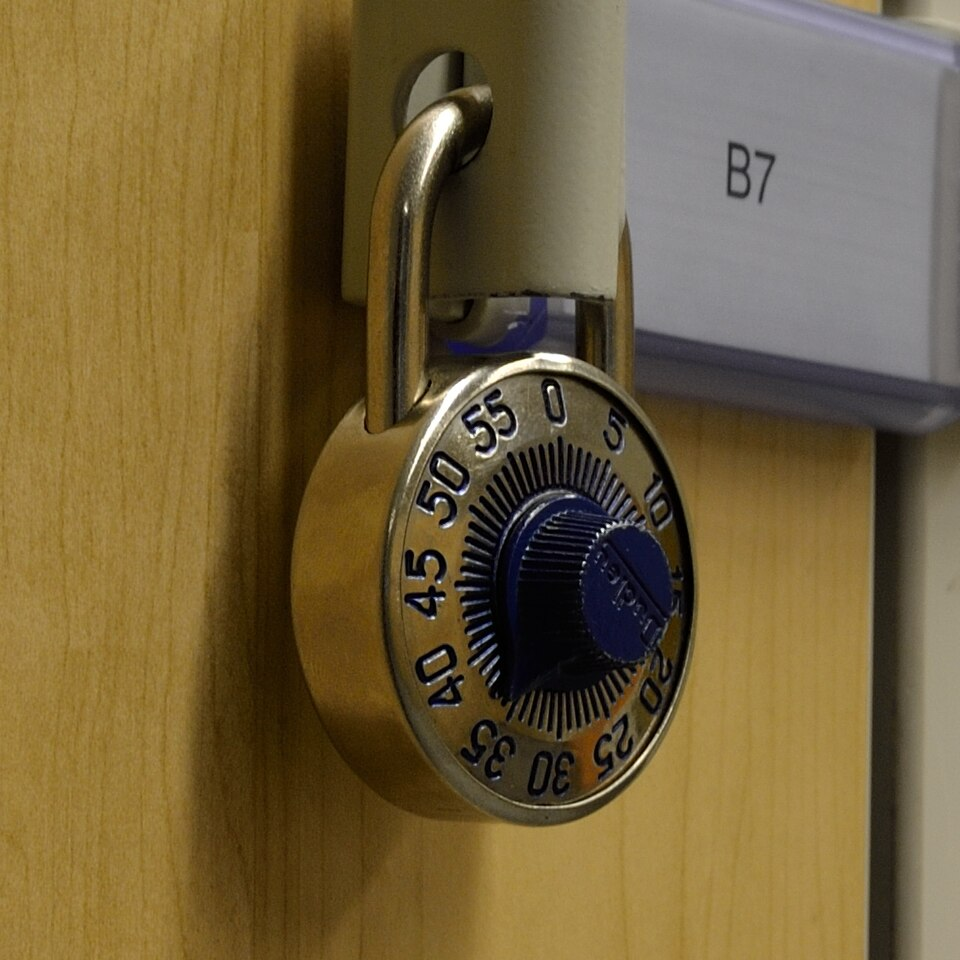
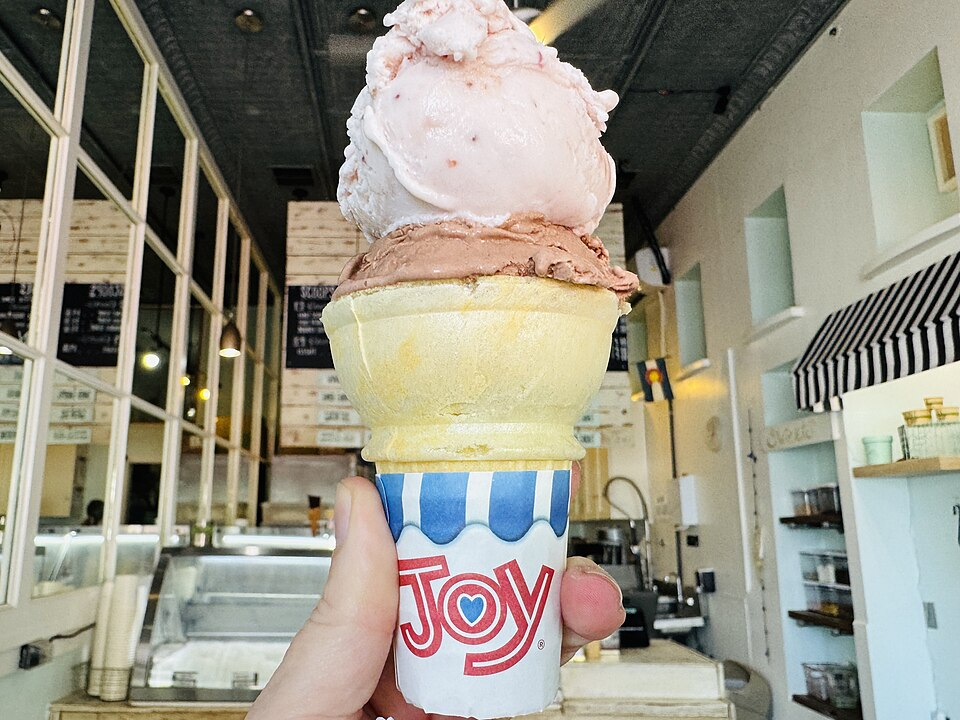

5! = 5 × 4 × 3 × 2 × 1 = 120 P(5, 2) = 5 × 4 = 20 ← order MATTERS C(5, 2) = 20 ÷ 2 = 10 ← order DOESN'T matter
Those three lines are the heart of this lesson — the math of counting without listing. The first line is a factorial: it counts the ways to line things up. The second is a permutation: it counts ordered picks, where gold-silver is different from silver-gold. The third is a combination: it counts unordered picks, where pepperoni-mushroom is the same pizza as mushroom-pepperoni. Telling those last two apart — instantly, every time — is the real skill in this lesson.
Why do people care? Because counting is everywhere: passwords and phone codes, tournament schedules, card hands, lottery odds, pizza menus, team picks, and every "how many ways?" question ever asked. And once you can count, probability becomes easy — probability is just favorable ÷ total, and now you'll be able to count BOTH.
In this lesson, you will:
- 1.Count with the multiplication machine — choices × choices × choices
- 2.Line up whole groups with factorials — and cancel them like a pro
- 3.Count ordered picks with permutations — gold, silver, bronze
- 4.Count unordered picks with combinations — and the un-scramble trick
- 5.Tell them apart with the one-question swap test
- 6.Learn the common mistakes so you never make them
- 7.Practice with 100 problems at the end — including backwards puzzles,
restriction twists, and design-your-own challenges!
How to use this lesson: Read the sections in order. Each section starts with the key idea you'll learn in it. Take your time, and try every "Your Turn" box with a pencil and paper. Ready? Let's go!
📸 Pictures

Fun fact: a "combination" lock should really be called a PERMUTATION lock, because the order of the numbers matters! See source ↓

Picking 2 flavors for a cup is a combination, but on a cone, which flavor goes on top matters. That's a permutation! See source ↓
🗺️ Your lesson map
The Counting Principle — The Multiplication Machine 🧩Lesson 2
Factorials — The Line-Up Machine 🎯Lesson 3
Permutations — When Order Matters 🔍Lesson 4
Combinations — When Order Doesn't Matter ⚡Lesson 5
The Big Decision — Permutation or Combination? ⚠️Lesson 6
Watch Out! Common Mistakes 🧠Lesson 7
Review — The Big Picture 🏋️Practice Problems
100 problems to try 🏆Quiz
Test yourself: new questions every time!
📚 Picture Sources
- Picture 1 · Dudley combination lock. By Raysonho. CC0. From Wikimedia Commons: https://commons.wikimedia.org/wiki/File:Dudley_combination_lock.jpg
- Picture 2 · Sweet Scoops - June 2025 - Sarah Stierch. By Missvain. CC0. From Wikimedia Commons: https://commons.wikimedia.org/wiki/File:Sweet_Scoops_-_June_2025_-_Sarah_Stierch.jpg